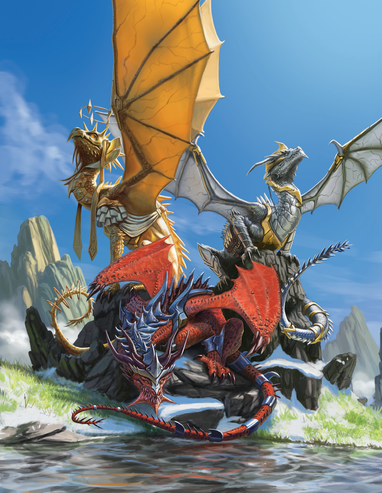

Authors: Mark Seifter & William Fischer
Toadstool Dragon Design: Ginny Di
Director of Game Design: Mark Seifter
Publisher: Stephen Glicker
Editing Lead: Stephen Glicker
Editing: Paul Hughes
Art Direction: Stephen Glicker
Cover Artist: Ameur Makhloufi
Interior Artist: Fırat Solhan
Graphic Design: Stephen Glicker
Layout: Stephen Glicker
Foundry VTT Implementation: Ian Blackstone, Ian Hildebrandt
Proofreaders: Jon Cole, Eric Dahlgren, David Greene, Sébastien “Aleph” Greffier, Avery Orr, Daniel Seligmüller, Joshua White, Nathan Joseph Wright
Playtesters: Mike Ackerman, Luca Borsalino, Jon Cole, Jason P. Crawford, Eric Dahlgren, Dom Ellis, David Greene, Sébastien “Aleph” Greffier, Samm James, Félix-Alexandre Lepage, Amanda Milovich, Avery Orr, Jeffrey Rude, Tony Saunders, Daniel Scott, Daniel Seligmüller, Michael Socci, Josh Talcott, Pierre Walker, Hayden Williams, Joshua White, Tris Leif Haakon Zauls-Smeets
Special Thanks: All the Roll For Combat fans!
Battlezoo Ancestries: Dragons (5E) is © 2022, Skyscraper Studios, Inc. All Rights Reserved. Second Printing, 2024 (Roll For Combat, rollforcombat.com).
Open Game Content: The Open Content in this book includes Dragon Race, Dragon Class, and Hoards of Power, published under the Open Game License v1.0a (© 2000, Wizards of the Coast, Inc.), referencing the System Reference Document 5.0 (© 2016, Wizards of the Coast, Inc.; Authors: Mike Mearls, Jeremy Crawford, Chris Perkins, Rodney Thompson, Peter Lee, James Wyatt, Robert J. Schwalb, Bruce R. Cordell, Chris Sims, and Steve Townshend, based on original material by E. Gary Gygax and Dave Arneson) and Battlezoo Bestiary (5E) (© 2022, Skyscraper Studios, Inc.; Authors: William Fischer, Stephen Glicker, Paul Hughes, Patrick Renie, Sen.H.H.S., and Mark Seifter).
翻译&校对：Fvtt - DND5E Babele 汉化, Penguin134
排版：Penguin134